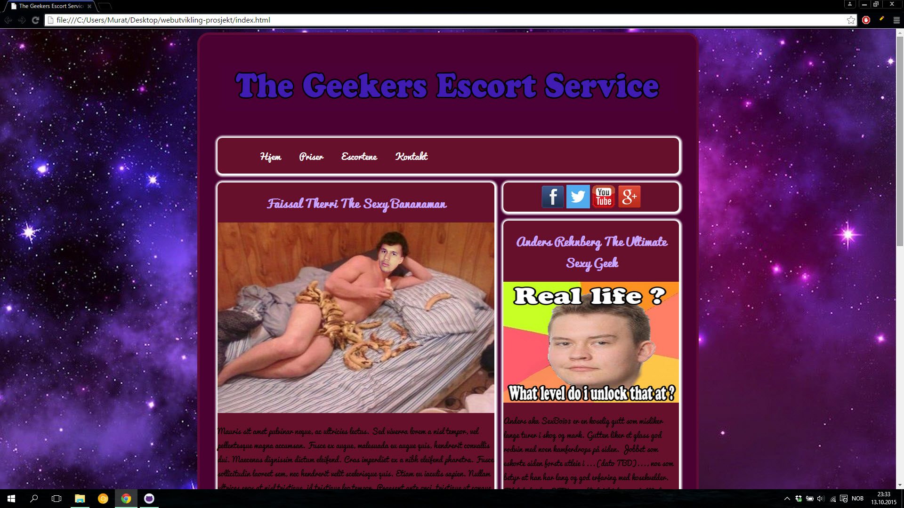
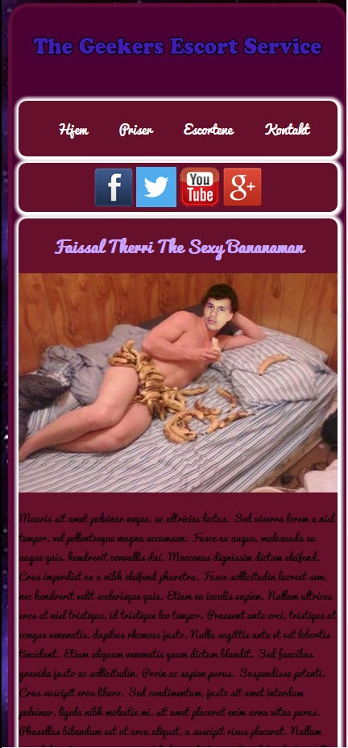

Gjør ferdig nettstedet som dere startet på i oblig 2.
Ferdigversjonen av websiden kan finnes her Websiden
Her er Github prosjektet Github
Gjør testing og dokumentering av at nettsiden validerer og at den vises korrekt på ulike medier/enheter/oppløsninger/browsere
Sånn ser websiden ut på datamaskinen
Sånn ser websiden ut på tablet
Sånn ser websiden ut på mobil
Gjør en kort oppsummering av bidrag fra gruppemeldemmene og arbeidsmetode i git,
samt erfaringer.
Svar: Jeg har brukernavnet nfspsmwchp. Jeg har bygget grunnlaget for hele websiden, satt inn
webfonts, satt inn metadata, bygget stylen, redigert bilder på photoshop og gjort alt
på hele indexen. Resten av gruppen har laget ferdig sidene i undermenyene, endra litt på
stylen og gjort resten ferdig. Vi brukte som sagt Github. Det tok litt tid å koble opp
alle i gruppen til prosjektet, men vi fikset det på kort tid og var i gang med prosjektet.
Fyll en enkel nettside med eksempler på bruk av webfonter, video (minimum "video"-
taggen), CSS animasjon, MathML og SVG. Eksemplene må lages selv, men trenger ikke
være veldig avanserte. "Råvideo" og fontfil kan hentes fra annen kilde”
Det dukker stadig opp "utvidelser" til HTML-språket, og MathML er en av disse vi har
sett på i kurset. Hvilke fordeler og ulemper er det ved å bruke MathML fremfor å sette
inn et bilde slik det ble gjort tidligere?
Svar: Det er mange fordeler med MathML. For det første for man informasjon som ren informasjon
istedet for bilde. Andre fordeler er at det er veldig enkelt å sette ny
informasjon, det er bygget inn i html5 og alt blir fremvist på en oversiktlig måte.
De største problemene med MathML er komplisert kode som må inn på websider som
allerede er komplisert nok og kodebaser vi allerede har kan ha sikkerhetsproblemer.